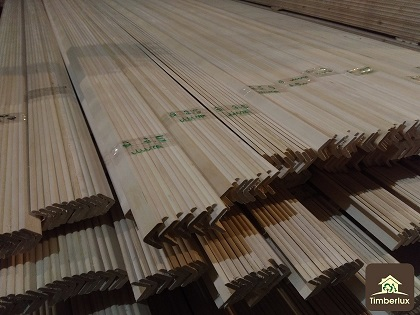

Угол наружный

Описание:
Только качественные наружные углы! По доступной цене!!!
Характеристики товара:
- Ель - 32 ₽/м.п сорт А
- Липа
- Осина
- Ольха
- 40 ₽/м.п -
- cорт А
Подробное описание товара
Угол наружный - незаменимый вариант для Вашего ремонта.
Мы предлагаем вам выбор среди разных видов древесины: Липа,
Осина, Ель, Ольха
Другие товары
ЕвроВагонка
Плинтус резной
©Все права защищены